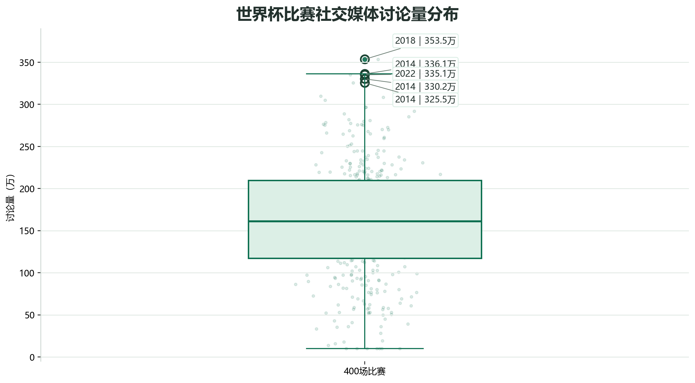
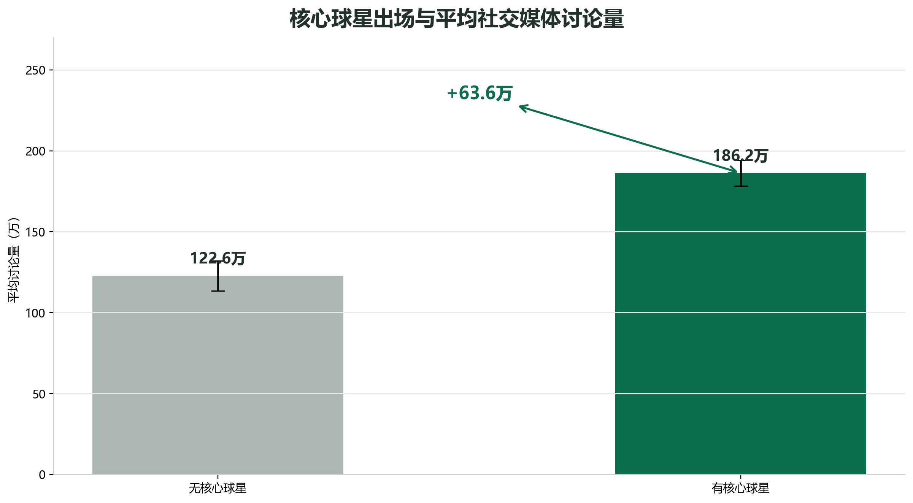
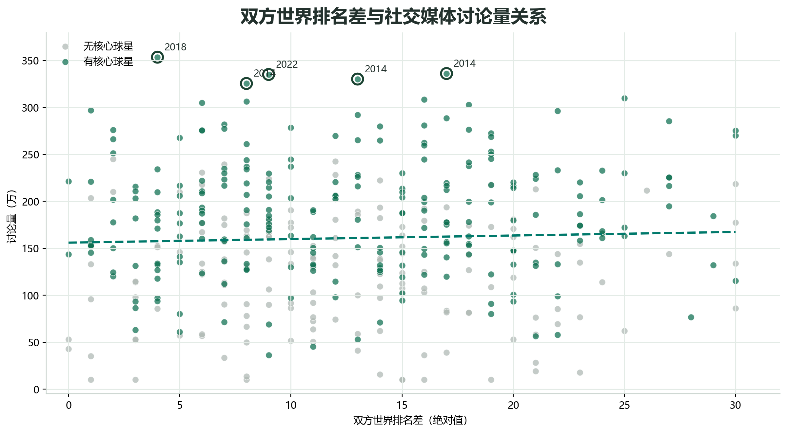
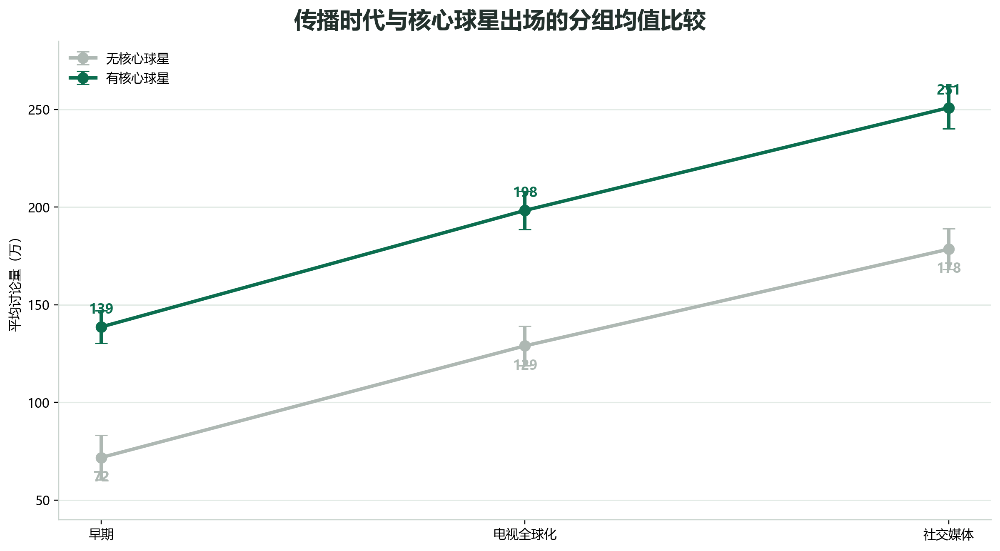
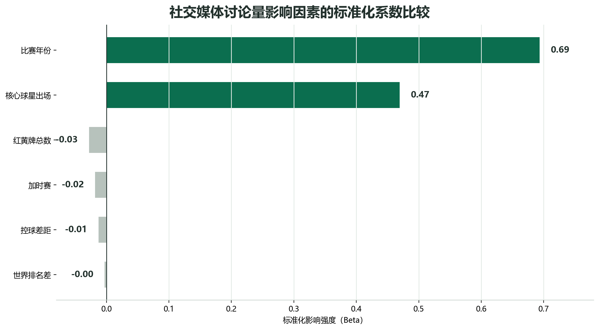

400场世界杯数据：哪些比赛最容易被推上热搜？
强弱悬殊不是答案。真正把一场比赛送进更大讨论场的，往往是球星、传播时代，以及一个能被反复讲述的故事。
一场世界杯，为什么会被反复讨论？
一场世界杯比赛结束后，比分会被写进赛程表，但真正留在社交平台上的，往往不是比分本身。人们会反复讨论一个进球、一张红牌、一次争议判罚，也会把某个球星的表情、庆祝或告别剪成短视频。比赛在球场上结束，却会在社交平台上继续发酵。
这就带来一个问题：到底什么样的比赛更容易被推上热搜？是强队和弱队之间的实力差距足够大，还是比赛足够激烈？是红黄牌多、加时赛长，还是因为有球星站在场上？
这些问题之所以重要，是因为世界杯已经不只是体育频道里的内容。它会进入短视频推荐、社交平台热榜、朋友圈转发和大众娱乐讨论。很多不常看球的人，也会在某些节点突然加入讨论：也许是因为一个熟悉的名字，也许是因为一场比赛被赋予了告别、逆袭或争议的意义。
基于400场历届世界杯核心比赛的数据，答案并不完全符合直觉。双方世界排名差和社交媒体讨论量之间几乎没有稳定关系；控球差、红黄牌数量、是否加时，也没有成为最突出的解释线索。真正把比赛推向更大讨论场的，是传播时代整体抬高的声量，以及核心球星提供的人物焦点。
也就是说，世界杯的热度不是简单由“谁强谁弱”决定的。它更像一个传播过程：赛场提供事件，球星提供人物，平台和时代提供扩散条件。只有三者碰到一起，一场比赛才更容易从体育新闻变成公共话题。
最热的几场，先把天花板顶了起来
在这400场比赛中，单场社交媒体讨论量的平均值为160.78万。最高的一场达到353.50万，排在前5位的比赛讨论量都超过325万。它们明显高出大多数比赛所在的区间，像几根尖峰，把世界杯讨论量的天花板顶了起来。
这类高点值得注意，不是因为它们只是数字上的极端，而是因为它们通常意味着一场比赛拥有更强的公共叙事。一个关键赛点、一次冷门、一个巨星时刻、一场争议，都会让比赛从“被看见”变成“被讨论”。
换句话说，热度最高的比赛，往往不只是踢完了一场球。它们还留下了一个可以被社交平台反复加工的故事。普通比赛构成了世界杯的日常背景，而这些高热度场次，则承担了赛事记忆的功能。
这也是很多体育热点的共同特征：真正传播开来的，往往不是完整的90分钟，而是被压缩后的一个场景。一个镜头、一个人物、一个结果，会比复杂的比赛过程更容易进入公共讨论。数据中的高点，正是这些被压缩、被转发、被记住的场景留下的轮廓。
这也解释了为什么只看平均值是不够的。平均值告诉我们普通比赛大概处在什么位置，高点则告诉我们哪些比赛越过了常规范围。数据新闻的线索，恰恰常常藏在这些高点里。
如果把世界杯看作一条不断流动的信息河流，普通比赛提供了水位，高热度比赛则制造了浪尖。浪尖出现在哪里，往往比河面平均有多高更值得追问。

球星，是比赛进入大众话题的捷径
核心球星的作用，在数据中最直观。没有核心球星出场的比赛，平均讨论量为122.64万；有核心球星出场的比赛，平均讨论量达到186.20万。两者相差约63.56万。
这不是一个很小的差距。换成更容易理解的说法，如果随机抽一场有核心球星出场的比赛，再随机抽一场没有核心球星的比赛，前者讨论量更高的概率约为76%。球星在场，确实明显增加了比赛进入更高讨论层级的机会。
原因并不难理解。战术和控球需要解释，排名差也需要背景；但人物不需要太多门槛。一个球星的名字、一张表情、一个进球、一次失误，就足够让不那么懂球的观众参与讨论。球星把专业赛事翻译成了大众话题。
这也是世界杯区别于许多普通体育比赛的地方。很多人未必熟悉一支球队的全部战术，但会知道某个球星的命运线：他是不是最后一届世界杯，能不能拿到冠军，是否在关键时刻站出来。人物让比赛拥有了更清晰的入口。
从传播角度看，球星还承担了“标签”的作用。平台上的讨论需要关键词，媒体报道需要标题，普通观众需要一个表达情绪的对象。相比“某队中场压迫体系变化”这样的专业表述，一个球星的名字更容易成为共同入口。球星越具备跨圈层识别度，比赛越容易越过球迷圈层进入大众讨论。
所以，球星并不只是提升关注度的附加项。对社交平台来说，球星更像一个放大器：他把比赛中的技术细节、情绪转折和胜负结果，压缩成一个更容易传播的符号。

强弱悬殊，未必能换来更多讨论
如果强弱悬殊天然更吸引人，那么双方世界排名差越大，比赛讨论量也应该越高。但数据没有呈现这种关系。双方排名差与社交媒体讨论量的相关系数只有0.039，几乎可以忽略。散点图中的趋势线也接近水平。
这意味着，纸面实力差并不会自动转化为社交热度。排名差很大的比赛，如果早早失去悬念，讨论可能很快退场；排名差不大的比赛，如果出现球星、淘汰赛压力、争议判罚或强烈情绪转折，反而可能冲到更高的位置。
强弱悬殊当然可以成为看点，但它需要被转化成故事。强队有没有翻车，弱队有没有逆袭，球星有没有被淘汰，这些才是更容易被传播的部分。单纯的排名差，只是一条赛前背景信息。
这和春运高铁票的逻辑有点类似：距离近不一定就好买，线路、班次和城市关系同样重要；世界杯里，实力差距也不一定就带来高热度，人物、节点和传播环境同样会改变讨论量。
因此，世界杯热度不是排名表的自然延伸。赛场上决定胜负的因素，未必就是社交平台上决定讨论量的因素。强弱悬殊只有进入一个可讲述的情境，才会真正变成流量。
这也能解释为什么一些看似“普通”的比赛会突然升温。社交平台不只奖励强弱对比，也奖励情绪反差。排名低的一方如果只是正常输球，讨论未必扩散；但如果它一度接近胜利，或者迫使强队陷入困境，排名差才会变成故事的一部分。真正带来传播的不是差距本身，而是差距被如何打破、如何维持、如何被观众感知。

时代改变了每场比赛的起跑线
同样是世界杯，不同时代的传播条件完全不同。将比赛年份分为早期、电视全球化时期和社交媒体时期后，早期世界杯的平均讨论量为114.23万，电视全球化时期升至169.51万，社交媒体时期进一步达到219.41万。从早期到社交媒体时期，单场比赛平均讨论量增加了约105.19万。
这说明，世界杯热度并不是只由场上90分钟决定。早期世界杯主要通过现场、报纸和延迟报道被传播；电视全球化时期，更多观众可以同步观看；到了社交媒体时代，进球、判罚、庆祝、失误都可以被即时截取、转发和再创作。
更重要的是，时代和球星不是替代关系，而是叠加关系。每个传播阶段中，有核心球星出场的比赛，平均讨论量都高于没有核心球星的比赛。到了社交媒体时期，有球星比赛的平均讨论量已经超过250万。
传播时代像是抬高了所有比赛的起跑线，球星则把其中一些比赛继续往上推。电视和社交平台提供扩音器，核心球星提供可识别的人物焦点。两者叠加时，一场比赛更容易从体育新闻变成公共话题。
这也是为什么同样一场有争议、有球星、有情绪转折的比赛，在不同年代可能拥有完全不同的公共能见度。平台改变的不是比赛规则，而是比赛被看见和被讨论的方式。
在社交媒体时代，观众不再只是观看者，也成了传播链条的一部分。一次转发、一条评论、一个二创视频，都可能把比赛推给更多原本没有观看直播的人。比赛热度因此不只来自现场和直播间，也来自赛后持续扩散的内容流。
这让世界杯的传播逻辑发生了变化。过去，一场比赛的影响力很大程度上取决于播出覆盖；现在，它还取决于能不能被切成足够多的传播片段。球星、争议和情绪瞬间，恰恰是最容易被切分和再传播的内容。

不是每种“激烈”，都能变成热搜
除了排名差，数据还记录了控球差、红黄牌数量和是否加时赛。但这些看起来与比赛激烈程度有关的指标，并没有稳定解释讨论量。控球差距与讨论量的关系很弱，红黄牌总数与讨论量的关系也很弱。
加时赛同样没有带来想象中的结果。非加时赛的平均讨论量为163.49万，加时赛为148.44万。直觉上，加时赛代表比赛更紧张、更胶着，但它并不自动意味着社交平台上更热。
原因可能在于，比赛的“激烈”需要被转译。加时赛、红黄牌、控球差，都是比赛过程中的信息；但这些信息要变成广泛讨论，还需要被连接到人物、争议或结果。否则，它们更多停留在专业球迷的讨论范围内。
把比赛年份、核心球星、排名差、控球差、红黄牌和加时赛放在一起比较后，这组变量可以解释约68.6%的讨论量差异。其中最突出的，仍然是比赛年份和核心球星出场。
这提醒我们，世界杯的热度并不是由某一个“激烈程度”指标单独决定的。一场比赛可以很紧张，却未必被广泛讨论；也可以技术层面未必最复杂，却因为人物和时代背景被反复记住。
对报道者来说，这一点尤其重要。并不是每一个可以量化的比赛指标，都值得单独做成新闻点。真正值得可视化的，是那些能帮助读者看见结构的问题：为什么球星比排名差更能解释讨论量？为什么时代会整体抬高热度？为什么某些高点明显冲出常规区间？

世界杯的热搜，不只由绿茵场决定
400场比赛的数据，给出了一个清晰的结论：世界杯当然需要好比赛，但好比赛并不必然等于高讨论量。强弱悬殊、控球差距、红黄牌和加时赛，都可能成为某场比赛的看点，却不是最稳定的流量来源。
真正更稳定的线索，是时代和人物。传播时代让每一场比赛更容易被看见，核心球星让其中一些比赛更容易被记住。现代世界杯已经不是单纯的赛场事件，而是竞技、媒介和人物叙事共同组成的传播事件。
如果要判断一场世界杯比赛有没有可能破圈，比分和排名只是第一层。更关键的问题是：它有没有一个能被普通观众快速理解的人物？有没有一个可以被反复转述的情绪瞬间？它发生在怎样的传播环境里？
世界杯的流量密码，不藏在排名差的绝对值里，而藏在时代提供的传播通道和人物制造的情绪焦点之间。
这也是数据带来的真正发现：它没有告诉我们哪一场比赛“最伟大”，却提醒我们，一场比赛被讨论的原因往往在赛场内外同时发生。绿茵场决定了事件，社交平台决定了事件如何继续生长。
数据说明
数据来自“世界杯数据集.sav”，包含历届世界杯400场核心比赛。分析变量包括比赛年份、双方世界排名差、控球率差值、红黄牌总数、是否加时赛、社交媒体总讨论量和核心球星是否出场。分析使用 IBM SPSS Statistics 27 完成。正文图表依据SPSS输出和原始数据重新设计，以便阅读；统计结果用于描述变量之间的关系，不直接等同于因果证明。